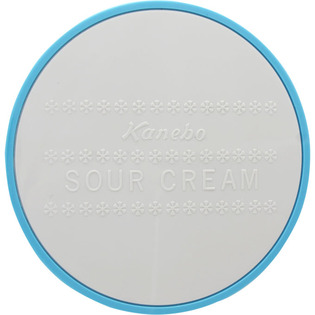
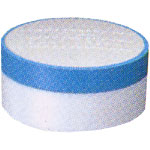

返回列表
产品名称：サワークリーム

カネボウ化粧品 サワークリーム ７５Ｇ
メーカー カネボウ化粧品
JANコード 4973167141052
商品の特徴
すぐれた洗浄力、洗い上がりがさわやかな、洗顔クリームです
成分・分量
＜配合成分＞
水・ミリスチン酸カリウム・ステアリン酸カリウム・ミリスチン酸・ステアリン酸・グリセリン・ジプロピレングリコール・ステアリン酸グリセリル（SE）・ヒマシ油・ラウリン酸カリウム・リン酸ナトリウム・ココイルメチルタウリンナトリウム・ラウリン酸・アラントイン・イソプロピルメチルフェノール・香料
用法及び用量
-